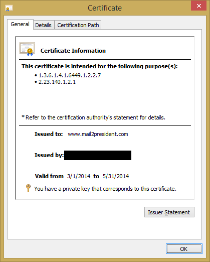

[Not?] Misissued Certificates:
or, how I was able to get over 2500 certificates for domains that I do not own
Four years ago, in 2010, Kurt Seifried released research on how certificate authorities (CAs) validated hostnames in SSL certificate requests. Colin Keigher followed on by with an actual implementation of that research resulting in his finding of five email providers that allowed the registering of addresses, which effectively allowed him to garner certificates for those domains. Not to completely rehash their articles and research, here is a basic summary. SSL is the way trust disseminates between clients and servers (browsers and websites) over the Internet. The means for establishing this trust is the use of digital certificates which are signed (or vouched for) by a certificate authority (CA). Every browser comes with a vetted list of trusted CAs allowed to vouch for these end-entities (website) certificates. Persons using browsers trust that the browser manufacturers adequately validate the CAs on the trusted list they include (although knowledgeable individuals can edit that list themselves). In order for a browser to add a CA to their trust list, they must show that they follow some basic rules that include establishing any applicants that request a certificate are either "the Domain Name Registrant or has control over the FQDN" (fully qualified domain name [e.g. google.com.]). The CA Browser Forum (CAB Forum), a coalition of trust store owners and CAs, lays down these and other guidelines in their Baseline Requirements.
The research by Seifried and Keigher follows the line of how the CA establishes the control over the FQDN. They show that if you are able to get control of a set of special email addresses (e.g. admin, administrator, root, hostmaster, etc.) you are then able to get an SSL certificate for that domain. Popular purveyors of email addresses like Inbox.com, Excite, and Lavabit allowed Keigher to register one or more of these special email addresses, which he in turn used to demonstrate control of those domains to CAs, ultimately resulting with him receiving SSL certificates.
I found that this avenue for procuring certificates still exists in at least two mail providers, which means that I was able to get upwards of 2,500 certificates for various domains that I do not own.
A service in the UK, Freeola, holder of over 500 domains, neglected to place a filter on the allowed email addresses, allowing for the registration of user addresses capable of asserting control over those 500 domains. At this service, I had the ability to procure certificates for domains such as BritishIntellegence.co.uk and ninjas.co.uk.
Freeola responded to my inquiries before publishing this article stating that they would not like to comment.
One of the mail providers mentioned in Keigher's piece, Mail2World, still has not fixed the issue for their cache of more than 2,500 different available domains. There were a multitude of different addresses available that would suffice, however, I chose to procure the email address ssladmin@mail2world.com as well as hostmaster@mail2president.com. (I am not monitoring these so do not bother sending mail there...) I tried to first get admin, administrator, and webmaster, for those particular domains, unfortunately, others had already taken them. It is entirely possible that others are getting SSL certs (or just fun email addresses) this way as well. Similar to the attempt for correspondence by Keigher, Mail2World neglected to respond to my inquiries for comment.
Seifried and Keigher predominantly presented this as a problem jointly between the CAs and site owners. I think the real issue is people do not understand what a SSL certificate stands for: Does it mean that the site owner or maintainer approved its issue? Does it just mean that someone loosely connected with that domain finagled a certificate out of the system? I believe that generally when technosavy people see a certificate, even if they take the time to think about it, they would tend to believe the former even though the latter may be true.
What has changed over the past four years? Is there a solution?
One option is to have the CA Browser Forum change what they consider 'control' of a domain and enforce that on CAs instead of a somewhat arbitrary list of names to demonstrate domain ownership, they could rely solely on the whois information, already well understood by everyone that has heard of whois. Another option, that preserves the privacy protection of private whois records, is to publicize a pared down mandatory list of addresses, or even a single, well-documented address for demonstrating domain ownership and advise email providers not to provision that address. Pending change in the CAB Forum, domain owners can set up mail sinks/traps for the list of addresses that prove domain ownership, this allows also for monitoring attempts of SSL registration done in this manner. However, this list can change on any CAs whim, and vary between different companies as well as change over time. Because of this, keeping up with the list of domain validation addresses in the end is likely infeasible.
There is, however, a way to receive a notification and/or block registration attempts done via any other method. Site administrators are able to set Certificate Authority Authorization (CAA) records in their DNS. This record is for the CA to check at time of issuance if a particular domain has given it authorization to issue certificates. If a check fails, the CA will contact site administrator at a specified address to report the authorization attempt. At this time only a few CAs have shown public support for CAA in their issuance process. CAA support in servers has been coming along a little slow, but, one year (and a smidge) following the RFC publication there is some headway, BIND has coming in support in 10-1.2, LDNS has support in 1.6.17, NSD has support in 4.0.1, yet PowerDNS still has none. This is much better news since the status back in July 2013.
Complementarily, as a detective control to catch anything that slips by CAA's preventative control, Google has embarked on a journey with an experimental standard called Certificate Transparency (CT). This is a public log of all issued certificates that includes a method for clients to verify that any certificates they come across are included in a public log. This assures that any trusted certificates you come across are knowable or known by anyone, giving CAs faster reaction times for revoking misissued certificates. Site operators can check these public logs for any certificates for domains they own that they have not authorized and take any appropriate action with the issuing CA. Chrome currently shows via their certificate inspection dialogue if parameters proving that a publicly audited certificate is the base of the established connection. Chrome recently broadcast that they are making the use of CT mandatory for Extended Validation certificates after 1 Feb 2015. Finally, sites can take a stricter stance and actively deny unauthorized certificates by utilizing HTTP Public Key Pinning (HPKP) to explicitly state which certificates are valid for their domain.
There are still many ways that CAs can validate a subscriber, some are not explicitly spelled out and trigger only if you contact support. Site owners/sysadmins/infosec personnel must take steps to protect their site by using a multifaceted set of controls. In the four years after the original research, more tools have been made available for administrators to use including Certificate Authority Authorization and Certificate Transparency. Further, there are others available that should begin gaining popularity in time, including DANE (certificate trust over DNSSEC) and HPKP's report mode. Report mode in HPKP gives a method for the user agent (i.e. the browser) to take in a set of expected certificates as well as a way to submit a report containing the actual certificates served if unexpected certificates are seen. It is unknown at this time when this functionality will be supported, I could not yet find any reference to it in the Chromium source. Until then, CAA, CT, and HPKP are all available now to help protect sites and their visitors.